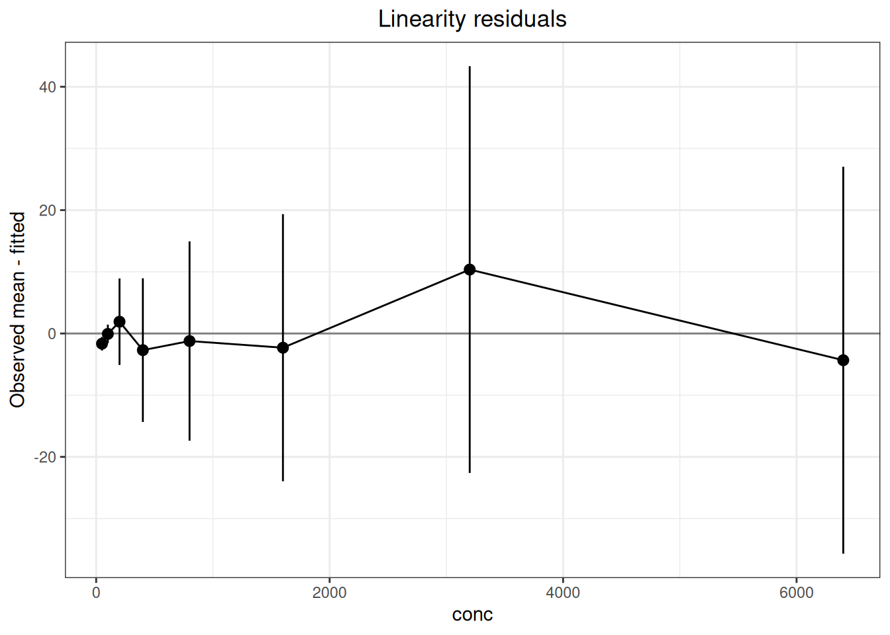

flowchart LR
A["Design LOW/HIGH and dilution levels"] --> B["linearity_replicates()<br/>linearity_panel()"]
B --> C["Replicate long table"]
C --> D["linearity()<br/>Aggregate and fit"]
D --> E["Residuals, intervals, ADL"]
E --> F["linearity_endpoints()<br/>Check endpoints"]
F --> G["Claim linearity only within<br/>the validated range"]
14 Linearity Analysis
Linearity evaluates whether measured results have an acceptable linear relationship with analyte concentration or target value across the working range. This chapter uses the dedicated linearity() workflow to summarize levels, apply weights, calculate straight-line residuals, compare allowable deviation from linearity (ADL), and perform exploratory polynomial analysis.
ImportantScope of Use
The core of CLSI EP06, 2nd edition, is comparison of straight-line residuals with a prespecified ADL. A high correlation or a nonsignificant quadratic term alone does not establish linearity. method="polynomial" reproduces the superseded EP6-A approach and should be labeled exploratory. The functions do not replace professional judgment about sample preparation, commutability, endpoint coverage, interference, or the reporting range.
Code
library(ivdtools)
library(readr)14.1 Main Functions
| Function | Main purpose | Key input or output |
|---|---|---|
linearity_replicates() |
Calculate replicates per level from precision and ADL | imprecision, adl, family_error |
linearity_panel() |
Design a HIGH/LOW preparation series | proportion_high, high, low, total_volume |
linearity_endpoints() |
Calculate laboratory-confirmed LOW/HIGH targets | LLoQ/ULoQ and low/high-end CV |
linearity() |
EP06 parameterized linearity analysis | method, weights, conf.level, adl_* |
plot() |
Plot fit, residuals, precision, or model differences | type |
Code
linearity_replicates(imprecision = 4, adl = 5, levels = 8, family_error = 0.10) Type: relative
Imprecision : 4
ADL : 5
True deviation : 0
Effective ADL : 5
Level probability : 0.98691628
Z : 2.4814824
Calculated replicates : 3.940963
Replicates : 4
Recommend four : FALSECode
linearity_panel(proportion_high = seq(0, 1, length.out = 6), high = 1000, low = 10, total_volume = 1) Sample: S1
Proportion high : 0
Proportion low : 1
Expected : 10
Relative concentration : 0.01
Total volume : 1
High volume : 0
Low volume : 1
Sample: S2
Proportion high : 0.2
Proportion low : 0.8
Expected : 208
Relative concentration : 0.208
Total volume : 1
High volume : 0.2
Low volume : 0.8
Sample: S3
Proportion high : 0.4
Proportion low : 0.6
Expected : 406
Relative concentration : 0.406
Total volume : 1
High volume : 0.4
Low volume : 0.6
Sample: S4
Proportion high : 0.6
Proportion low : 0.4
Expected : 604
Relative concentration : 0.604
Total volume : 1
High volume : 0.6
Low volume : 0.4
Sample: S5
Proportion high : 0.8
Proportion low : 0.2
Expected : 802
Relative concentration : 0.802
Total volume : 1
High volume : 0.8
Low volume : 0.2
Sample: S6
Proportion high : 1
Proportion low : 0
Expected : 1000
Relative concentration : 1
Total volume : 1
High volume : 1
Low volume : 0Code
linearity_endpoints(lloq = 10, uloq = 1000, cv_high = 5, cv_at_lloq = 20, cv_at_k_lloq = 15)CLSI EP06-Ed2 target concentrations
LOW target: 14.14116
HIGH target: 924.0072The replicate-count function reports a design quantity only. Final level and replicate counts must satisfy the protocol, applicable standard, and available samples. LOW/HIGH calculations use laboratory-confirmed target concentrations and are not a substitute for a manufacturer’s validation process.
14.2 Model, Weights, and ADL
Code
linearity_replicates(
imprecision, adl, type = c("relative", "absolute"),
level_probability = 0.99, levels = NULL, family_error = NULL,
true_deviation = 0, min_replicates = 2
)
linearity_panel(proportion_high, high, low = 0, total_volume = NULL, sample = NULL)
linearity(
data, sample, result, x, method = c("linear", "polynomial"),
intercept = TRUE,
weights = c("equal", "level_variance", "pooled", "precision_profile"),
variance_group = NULL, conf.level = NULL,
multiplicity = c("familywise", "none"), adl = NULL,
adl_abs = NULL, adl_rel = NULL
)If the per-level central coverage is \(P_L\), repeatability is \(s\), expected true deviation is \(δ_0\), and effective ADL is \(A_{\mathrm{eff}}=A-δ_0\), the replicate count is
\[n=\left\lceil\left(\frac{z_{(1+P_L)/2}s}{A_{\mathrm{eff}}}\right)^2\right\rceil.\]
For familywise error \(α_F\) over \(L\) levels, \(P_L=(1-α_F)^{1/L}\). Relative inputs use percentage units: 5 means 5%.
With high-sample proportion \(p_h\),
\[x_{\mathrm{expected}}=p_hx_H+(1-p_h)x_L.\]
linearity(method="linear") first summarizes each level as \(\bar y_j,s_j,n_j\) and fits \(\bar y_j=\beta_0+\beta_1x_j+e_j\).
weights |
Level-mean weight | Meaning |
|---|---|---|
equal |
\(1\) | Equal weight |
level_variance |
\(n_j/s_j^2\) | Use the variance at each level |
pooled |
\(n_j/\widehat\sigma_g^2\) | Use groups supplied in variance_group; no automatic grouping |
precision_profile |
\(1/\widehat\sigma_j^2\) | Use variance predicted from an SD–mean profile |
The residual is \(r_j=\bar y_j-\widehat y_j\), and ADL is exceeded when \(|r_j|>ADL_j\). When weights="pooled", groups must be explicit, contiguous after sorting by \(x\), and contain at least two levels. percent_base determines the denominator of relative residuals. multiplicity="familywise" converts overall coverage to per-level coverage; "none" uses the overall coverage at every level.
14.3 Analysis Examples
14.3.1 Serial-Dilution Linearity
Code
dilution <- read_csv("./data/014-线性分析/linearity-dilution.csv", show_col_types = FALSE)
dilution <- as.data.frame(dilution)
head(dilution, 6) conc replicate signal
1 50 1 48.6
2 50 2 49.2
3 50 3 50.0
4 100 1 101.3
5 100 2 99.7
6 100 3 101.4Code
fit_lin <- linearity(
dilution, sample = "conc", result = "signal", x = "conc",
method = "linear", weights = "equal", conf.level = 0.95,
multiplicity = "familywise", adl_rel = 5
)
print(fit_lin)Linearity regression analysis
Analysis settings
Method: linear (EP06-Ed2)
Observations / levels: 24 / 8
Intercept: estimated
Weights: equal
Fit unit: level_mean
Model comparison
Degree: 1
Observations : 8
Parameters : 2
Residual degrees of freedom : 6
RSS : 146.65863
Weighted RSS : 146.65863
SY.X : 4.9439969
Weighted SY.X : 4.9439969
R-squared : 0.99999571
Adjusted R-squared : 0.999995
Regression coefficients
Estimate Std. Error t value Pr(>|t|)
a 0.975290473 2.205878722 0.44213 0.67388
b 0.998893935 0.000844269 1183.14720 < 2e-16 ***
---
Signif. codes: 0 '***' 0.001 '**' 0.01 '*' 0.05 '.' 0.1 ' ' 1
Sample fit information
Sample Expected Predicted Observed mean Weight Observed SD n
50 50 50.920 49.2667 1 0.702377 3
100 100 100.865 100.8000 1 0.953939 3
200 200 200.754 202.6667 1 4.452340 3
400 400 400.533 397.8333 1 7.396170 3
800 800 800.090 798.8667 1 10.261741 3
1600 1600 1599.206 1596.9000 1 13.753545 3
3200 3200 3197.436 3207.8000 1 20.940869 3
6400 6400 6393.896 6389.5667 1 19.923437 3
Sample bias information
Sample Residual Recovery bias Residual (%) Recovery bias (%) ADL Decision
50 -1.653321 -0.733333 -3.2468990 -1.466667 2.54600 Within ADL
100 -0.064684 0.800000 -0.0641295 0.800000 5.04323 Within ADL
200 1.912589 2.666667 0.9527025 1.333333 10.03770 Within ADL
400 -2.699531 -2.166667 -0.6739850 -0.541667 20.02664 Within ADL
800 -1.223772 -1.133333 -0.1529542 -0.141667 40.00452 Within ADL
1600 -2.305587 -3.100000 -0.1441708 -0.193750 79.96028 Within ADL
3200 10.364116 7.800000 0.3241384 0.243750 159.87179 Within ADL
6400 -4.329810 -10.433333 -0.0677179 -0.163021 319.69482 Within ADL
Definitions
Residual = observed mean - predicted value.
Recovery bias = observed mean - expected value.
Recovery bias (%) = 100 * recovery bias / expected value.
Residual (%) denominator: predicted.
ADL decision metric = residual.Code
plot(fit_lin, type = "fit")
Code
plot(fit_lin, type = "residual")
adl_exceeded is a numeric comparison with the ADL supplied by the caller, not a complete product-acceptance decision. Choose weights according to the design and heteroscedasticity structure, and compare residuals, back-calculated bias, and prespecified criteria.
14.3.2 Polynomial Sensitivity Analysis
Code
poly_data <- read_csv("./data/014-线性分析/linearity-polynomial.csv", show_col_types = FALSE)
poly_data <- as.data.frame(poly_data)
head(poly_data, 6) conc replicate signal
1 75.00 1 75.0
2 75.00 2 75.0
3 75.00 3 74.4
4 483.75 1 454.1
5 483.75 2 455.3
6 483.75 3 456.0Code
fit_poly <- linearity(
poly_data, sample = "conc", result = "signal", x = "conc",
method = "polynomial", weights = "level_variance", max_degree = 3,
poly_alpha = 0.05, percent_base = "predicted"
)
print(fit_poly)Linearity regression analysis
Analysis settings
Method: polynomial (EP6-A, exploratory)
Observations / levels: 15 / 5
Intercept: estimated
Weights: level_variance
Fit unit: observation
Selected degree: 3
Model comparison
Degree: 1
Observations : 15
Parameters : 2
Residual degrees of freedom : 13
RSS : 52631.917
Weighted RSS : 550.93015
SY.X : 63.62868
Weighted SY.X : 6.5099341
R-squared : 0.99902344
Adjusted R-squared : 0.99894832
Degree: 2
Observations : 15
Parameters : 3
Residual degrees of freedom : 12
RSS : 10241.163
Weighted RSS : 30.175825
SY.X : 29.213529
Weighted SY.X : 1.5857655
R-squared : 0.99994651
Adjusted R-squared : 0.9999376
Degree: 3
Observations : 15
Parameters : 4
Residual degrees of freedom : 11
RSS : 4360.5146
Weighted RSS : 15.881083
SY.X : 19.910058
Weighted SY.X : 1.2015552
R-squared : 0.99997185
Adjusted R-squared : 0.99996417
Selected : Yes
Regression coefficients (degree 1)
Estimate Std. Error t value Pr(>|t|)
a 3.26682147 1.60149874 2.03985 0.062224 .
b 0.94635339 0.00820623 115.32135 < 2e-16 ***
---
Signif. codes: 0 '***' 0.001 '**' 0.01 '*' 0.05 '.' 0.1 ' ' 1
Regression coefficients (degree 2)
Estimate Std. Error t value Pr(>|t|)
a 7.07723e+00 4.71485e-01 15.0105 3.8555e-09 ***
b 8.98365e-01 3.88796e-03 231.0636 < 2.22e-16 ***
c 5.87581e-05 4.08310e-06 14.3905 6.2393e-09 ***
---
Signif. codes: 0 '***' 0.001 '**' 0.01 '*' 0.05 '.' 0.1 ' ' 1
Regression coefficients (degree 3, selected)
Estimate Std. Error t value Pr(>|t|)
a 1.08167e+01 1.24094e+00 8.71655 2.8637e-06 ***
b 8.38991e-01 1.90976e-02 43.93179 1.0374e-13 ***
c 1.93013e-04 4.27784e-05 4.51193 0.0008837 ***
d -5.97186e-08 1.89786e-08 -3.14662 0.0092980 **
---
Signif. codes: 0 '***' 0.001 '**' 0.01 '*' 0.05 '.' 0.1 ' ' 1
Sample fit information
Sample Expected Predicted Observed mean Weight Observed SD n
75 75.00 74.8015 74.800 8.33333333 0.346410 3
483.75 483.75 455.0861 455.133 1.08303249 0.960902 3
892.5 892.50 870.9067 865.967 0.01552474 8.025792 3
1301.25 1301.25 1297.7933 1328.467 0.00166688 24.493332 3
1710 1710.00 1711.2760 1710.433 0.01516914 8.119319 3
Sample bias information
Sample Residual Recovery bias Residual (%) Recovery bias (%) DL ADL Decision
75 -0.00153386 -0.200000 -0.00206599 -0.2666667 0.558208 NA Not assessed
483.75 0.04720887 -28.616667 0.01023909 -5.9155900 -5.979149 NA Not assessed
892.5 -4.94005897 -26.533333 -0.58263161 -2.9729225 23.019504 NA Not assessed
1301.25 30.67332481 27.216667 2.48425504 2.0915786 63.084173 NA Not assessed
1710 -0.84264426 0.433333 -0.05196596 0.0253411 89.744861 NA Not assessed
Definitions
Residual = observed mean - predicted value.
Recovery bias = observed mean - expected value.
Recovery bias (%) = 100 * recovery bias / expected value.
Residual (%) denominator: predicted.
ADL decision metric = deviation from linearity (DL).
Warnings / interpretation notes
1 duplicate sample/result/x row(s) were retained.
Polynomial regression follows superseded EP6-A and is exploratory under EP06-Ed2. Code
plot(fit_poly, type = "fit")
Code
plot(fit_poly, type = "difference")
14.3.3 Standard Cross-Checks
The package can reproduce the principal calculations in CLSI EP06 Appendices G–I and the YY/T 1789.4 Appendix A.5 linearity example using the supplied CSV files. The following pattern illustrates the EP06 Appendix G weighting and the reporting convention:
Code
ep06_g <- as.data.frame(read_csv(
"./data/014-线性分析/std-ep06-appendix-g.csv", show_col_types = FALSE
))
ep06_g_ivd <- linearity(
ep06_g, sample = "level", result = "result", x = "expected",
method = "linear", intercept = FALSE, weights = "pooled",
variance_group = "variance_group"
)
ep06_g_ivdLinearity regression analysis
Analysis settings
Method: linear (EP06-Ed2)
Observations / levels: 20 / 10
Intercept: fixed at zero
Weights: pooled
Variance group: variance_group
Fit unit: level_mean
Model comparison
Degree: 1
Observations : 10
Parameters : 1
Residual degrees of freedom : 9
RSS : 2010.7972
Weighted RSS : 83.183953
SY.X : 14.947304
Weighted SY.X : 3.0401746
R-squared : 0.99911786
Adjusted R-squared : 0.99901984
Regression coefficients
Estimate Std. Error t value Pr(>|t|)
b 1.0677279 0.0105755 100.962 4.6544e-15 ***
---
Signif. codes: 0 '***' 0.001 '**' 0.01 '*' 0.05 '.' 0.1 ' ' 1
Pooled variance groups
Variance group: low
Levels : 3
Degrees of freedom : 3
Minimum x : 52.9
Maximum x : 158.7
Pooled variance : 1.21
Pooled SD : 1.1
Level-mean weight : 1.6528926
Minimum weight : 1.6528926
Maximum weight : 1.6528926
Variance group: middle
Levels : 4
Degrees of freedom : 4
Minimum x : 211.6
Maximum x : 370.3
Pooled variance : 55.255
Pooled SD : 7.4333707
Level-mean weight : 0.036195819
Minimum weight : 0.036195819
Maximum weight : 0.036195819
Variance group: high
Levels : 3
Degrees of freedom : 3
Minimum x : 423.2
Maximum x : 529
Pooled variance : 267.72167
Pooled SD : 16.362202
Level-mean weight : 0.0074704451
Minimum weight : 0.0074704451
Maximum weight : 0.0074704451
Sample fit information
Sample Expected Predicted Observed mean Weight Observed SD n
10 52.9 56.4828 51.25 1.65289256 0.353553 2
9 105.8 112.9656 111.30 1.65289256 1.838478 2
8 158.7 169.4484 171.95 1.65289256 0.353553 2
7 211.6 225.9312 233.15 0.03619582 5.586144 2
6 264.5 282.4140 292.05 0.03619582 6.293250 2
5 317.4 338.8968 350.15 0.03619582 4.879037 2
4 370.3 395.3796 391.45 0.03619582 11.242998 2
3 423.2 451.8624 468.20 0.00747045 20.364675 2
2 476.1 508.3453 496.65 0.00747045 18.879751 2
1 529.0 564.8281 529.00 0.00747045 5.656854 2
Sample bias information
Sample Residual Recovery bias Residual (%) Recovery bias (%) ADL Decision
10 -5.23281 -1.65 -9.26442 -3.11909 NA Not assessed
9 -1.66561 5.50 -1.47444 5.19849 NA Not assessed
8 2.50158 13.25 1.47631 8.34909 NA Not assessed
7 7.21878 21.55 3.19512 10.18431 NA Not assessed
6 9.63597 27.55 3.41200 10.41588 NA Not assessed
5 11.25317 32.75 3.32053 10.31821 NA Not assessed
4 -3.92964 21.15 -0.99389 5.71159 NA Not assessed
3 16.33755 45.00 3.61560 10.63327 NA Not assessed
2 -11.69525 20.55 -2.30065 4.31632 NA Not assessed
1 -35.82806 0.00 -6.34318 0.00000 NA Not assessed
Definitions
Residual = observed mean - predicted value.
Recovery bias = observed mean - expected value.
Recovery bias (%) = 100 * recovery bias / expected value.
Residual (%) denominator: predicted.
ADL decision metric = residual.The ten levels are explicitly grouped as 1–3, 4–7, and 8–10. The user supplies these groups from the repeatability-SD–concentration assessment and protocol; the function does not select a favorable grouping.
For Appendix H, use weights = "level_variance" and fit the combined panel and each panel separately. For Appendix I, use the published summary data and weights \(10/s^2\) rather than manufacturing pseudo-raw replicates. The standard’s higher-order model-selection and ADL-PctBnd lookup are not identical to the package’s exploratory polynomial mode; report this algorithm difference explicitly.
Code
yyt1789_4 <- read.csv("./data/014-线性分析/std-ep06-appendix-g.csv")
yyt1789_4_fit <- linearity(
yyt1789_4, sample = "level", result = "result", x = "expected",
method = "linear", weights = "equal", adl_rel = 10
)
yyt1789_4_fitLinearity regression analysis
Analysis settings
Method: linear (EP06-Ed2)
Observations / levels: 20 / 10
Intercept: estimated
Weights: equal
Fit unit: level_mean
Model comparison
Degree: 1
Observations : 10
Parameters : 2
Residual degrees of freedom : 8
RSS : 1709.9271
Weighted RSS : 1709.9271
SY.X : 14.61988
Weighted SY.X : 14.61988
R-squared : 0.99309927
Adjusted R-squared : 0.99223668
Regression coefficients
Estimate Std. Error t value Pr(>|t|)
a 9.1333333 9.9872792 0.9145 0.38719
b 1.0324168 0.0304271 33.9308 6.2178e-10 ***
---
Signif. codes: 0 '***' 0.001 '**' 0.01 '*' 0.05 '.' 0.1 ' ' 1
Sample fit information
Sample Expected Predicted Observed mean Weight Observed SD n
10 52.9 63.7482 51.25 1 0.353553 2
9 105.8 118.3630 111.30 1 1.838478 2
8 158.7 172.9779 171.95 1 0.353553 2
7 211.6 227.5927 233.15 1 5.586144 2
6 264.5 282.2076 292.05 1 6.293250 2
5 317.4 336.8224 350.15 1 4.879037 2
4 370.3 391.4373 391.45 1 11.242998 2
3 423.2 446.0521 468.20 1 20.364675 2
2 476.1 500.6670 496.65 1 18.879751 2
1 529.0 555.2818 529.00 1 5.656854 2
Sample bias information
Sample Residual Recovery bias Residual (%) Recovery bias (%) ADL Decision
10 -12.4981818 -1.65 -19.60555025 -3.11909 6.37482 Exceeds ADL
9 -7.0630303 5.50 -5.96726046 5.19849 11.83630 Within ADL
8 -1.0278788 13.25 -0.59422557 8.34909 17.29779 Within ADL
7 5.5572727 21.55 2.44176200 10.18431 22.75927 Within ADL
6 9.8424242 27.55 3.48765416 10.41588 28.22076 Within ADL
5 13.3275758 32.75 3.95685524 10.31821 33.68224 Within ADL
4 0.0127273 21.15 0.00325142 5.71159 39.14373 Within ADL
3 22.1478788 45.00 4.96531184 10.63327 44.60521 Within ADL
2 -4.0169697 20.55 -0.80232369 4.31632 50.06670 Within ADL
1 -26.2818182 0.00 -4.73305938 0.00000 55.52818 Within ADL
Definitions
Residual = observed mean - predicted value.
Recovery bias = observed mean - expected value.
Recovery bias (%) = 100 * recovery bias / expected value.
Residual (%) denominator: predicted.
ADL decision metric = residual.14.4 Interpretation
- A successful fit does not establish model suitability; evaluate residuals, bias, acceptance limits, and the protocol.
- Examine residuals on both original and relative scales, especially when values span orders of magnitude.
- Select weights using the observed variance structure or protocol requirements.
- Conclusions apply only within the validated range; avoid unsupported extrapolation.
- Preserve raw data, code, model parameters, convergence information, package version, and session information.
14.5 Complete Standard Cases
14.5.1 CLSI EP06 Second Edition Appendix G: Two-Replicate Study
Appendix G prepares ten levels by mixing HIGH with blank at relative concentrations of 0.1–1.0, with two measurements per level. The prespecified linear interval is 55–500 U/L and the allowable deviation from linearity is ±10%. Because there are only two replicates per level, the standard pools adjacent-level variances into three groups and uses \(2/\overline{s^2}\) as the no-intercept WLS weight. The grouping column is written directly into the CSV according to standard Table G3, and expected values are already calculated from the HIGH concentration and preparation proportions.
Code
ep06_g <- as.data.frame(read_csv(
"./data/014-线性分析/std-ep06-appendix-g.csv",
show_col_types = FALSE
))Code
ep06_g_ivd <- linearity(
ep06_g, sample = "level", result = "result", x = "expected",
method = "linear", intercept = FALSE,
weights = "pooled", variance_group = "variance_group"
)| Standard location | Statistic | Standard | ivdtools |
|---|---|---|---|
| EP06 Ed2 Appendix G | WLS_slope | 1.0677 | 1.0677 |
| EP06 Ed2 Appendix G | max_abs_deviation_percent | 9.3000 | 9.2644 |
variance_group explicitly assigns levels 1–3, 4–7, and 8–10 to three groups. The grouping is supplied by the analyst from the repeatability-SD versus concentration plot and the prespecified plan; the function does not select the most favorable grouping automatically.
14.5.2 CLSI EP06 Second Edition Appendix H: Two-Panel Study
Appendix H prepares two panels, HIGH1 and HIGH2, separately with blank, at ten levels per panel and five measurements per level, for 100 results. HIGH1 covers the high end and HIGH2 the low end; together they cover the case’s prespecified 20–1,000 U/L range. Each level receives weight \(5/s^2\) in a no-intercept WLS fit. The CSV includes sample_id and expected values determined by panel, level, and preparation proportion, so it can enter the analysis directly.
Code
ep06_h <- as.data.frame(read_csv(
"./data/014-线性分析/std-ep06-appendix-h.csv",
show_col_types = FALSE
))Code
ep06_h_fit <- function(z) {
fit <- linearity(
z, sample = "sample_id", result = "result", x = "expected",
method = "linear", intercept = FALSE, weights = "level_variance"
)
data.frame(
slope = fit$coefficients$estimate,
max_abs_deviation_percent = max(abs(fit$level_summary$percent_residual_linear))
)
}
ep06_h_combined <- ep06_h_fit(ep06_h)
ep06_h_separate <- do.call(rbind, lapply(
split(ep06_h, ep06_h$panel), ep06_h_fit
))| Standard location | Statistic | Standard | ivdtools |
|---|---|---|---|
| EP06 Ed2 Appendix H | combined WLS slope | 0.9686 | 0.9686 |
| EP06 Ed2 Appendix H | combined maximum deviation (%) | 14.5000 | 14.4759 |
| EP06 Ed2 Appendix H | HIGH1 WLS slope | 0.9496 | 0.9496 |
| EP06 Ed2 Appendix H | HIGH1 maximum deviation (%) | 12.8000 | 12.7612 |
| EP06 Ed2 Appendix H | HIGH2 WLS slope | 1.0013 | 1.0013 |
| EP06 Ed2 Appendix H | HIGH2 maximum deviation (%) | 9.2000 | 9.2134 |
The maximum deviation in all three analyses is below the case’s prespecified ±15%, but the overlap, range coverage, and weighting structure of the two panels are prerequisites for that conclusion.
14.5.3 CLSI EP06 Second Edition Appendix I: Assigned Samples
Appendix I provides true values, ten-measurement means, and SDs for nine spiked samples but does not publish the 90 individual measurements. This case therefore retains the published summary granularity and does not create pseudo-raw observations from the means and SDs. The weight is \(10/s^2\), the fitted model is a no-intercept WLS line, and the prespecified allowable deviation is ±2%.
Code
ep06_i <- as.data.frame(read_csv(
"./data/014-线性分析/std-ep06-appendix-i-summary.csv",
show_col_types = FALSE
))
ep06_i$weight <- ep06_i$n / ep06_i$sd^2
ep06_i_ivd <- linearity(
ep06_i, sample = "sample", result = "measured_mean", x = "true_value",
method = "linear", intercept = FALSE, weights = ep06_i$weight
)| Standard location | Statistic | Standard | ivdtools |
|---|---|---|---|
| EP06 Ed2 Appendix I | WLS_slope | 1.0045 | 1.0045 |
| EP06 Ed2 Appendix I | max_abs_deviation_percent | 1.7000 | 1.7212 |
The recalculated maximum absolute deviation is within the case’s prespecified ±2%. Recovery bias and linearity deviation answer different questions: the former is relative to the true value, while the latter is relative to the best-fit line, so they cannot replace one another.
14.5.4 WS/T 408–2024: Five-Level Linearity Verification
The HDL-C case in Appendix A.4 contains five levels with three measurements per level. The standard focuses on the residual SD of the straight-line regression, \(s_{y|x}\), the within-run SD \(s_{WR}\), their F ratio, and the nonlinear SD \(s_{NL}\).
Code
wst408_linearity <- read_csv(
"./data/014-线性分析/std-wst408-linearity.csv",
show_col_types = FALSE
)
wst408_linearity_ivd <- linearity(
as.data.frame(wst408_linearity), sample = "level", result = "measured",
x = "expected", method = "linear", conf.level = 0.95
)| Standard location | Statistic | Standard | ivdtools |
|---|---|---|---|
| WS/T 408 Appendix A.4 | s_yx | 0.0318 | 0.03277 |
| WS/T 408 Appendix A.4 | s_WR | 0.0186 | NA |
| WS/T 408 Appendix A.4 | F | 2.9130 | NA |
| WS/T 408 Appendix A.4 | s_NL | 0.0258 | NA |
linearity() fits the line to the five level means and returns \(s_{y|x}\approx0.0328\); the standard companion table gives 0.0318. The s_WR, F, and s_NL quantities required by the standard are not public results in the current object, so the table marks them explicitly as NA.
14.5.5 YY/T 1789.4–2022 Appendix A: Linearity Sample 1
Appendix A.5 provides 14 dilution levels for AFP linearity sample 1, with four results per level. The standard selects a model using significance of higher-order polynomial terms and then evaluates level-specific relative bias from the final line against a ±10% allowable error.
Code
yyt1789_4 <- read.csv(
"./data/014-线性分析/std-yyt1789-4-appendix-a-sample1.csv"
)
yyt1789_4_linear_p <- linearity(
yyt1789_4, sample = "level", result = "result", x = "dilution",
method = "polynomial", weights = "equal", adl_rel = 10
)
yyt1789_4_linear <- linearity(
yyt1789_4, sample = "level", result = "result", x = "dilution",
method = "linear", weights = "equal", adl_rel = 10
)| Standard location | Statistic | Standard | ivdtools |
|---|---|---|---|
| YY/T 1789.4 Appendix A.5 / level 1 | final-line prediction | 4.28 | 4.284 |
| YY/T 1789.4 Appendix A.5 / level 1 | relative bias (%) | 6.07 | 5.974 |
| YY/T 1789.4 Appendix A.5 / level 2 | final-line prediction | 19.40 | 19.401 |
| YY/T 1789.4 Appendix A.5 / level 2 | relative bias (%) | 5.05 | 5.046 |
| YY/T 1789.4 Appendix A.5 / level 3 | final-line prediction | 34.52 | 34.518 |
| YY/T 1789.4 Appendix A.5 / level 3 | relative bias (%) | 4.46 | 4.453 |
| YY/T 1789.4 Appendix A.5 / level 4 | final-line prediction | 64.75 | 64.752 |
| YY/T 1789.4 Appendix A.5 / level 4 | relative bias (%) | -3.69 | -3.697 |
| YY/T 1789.4 Appendix A.5 / level 5 | final-line prediction | 125.22 | 125.219 |
| YY/T 1789.4 Appendix A.5 / level 5 | relative bias (%) | 7.25 | 7.250 |
| YY/T 1789.4 Appendix A.5 / level 6 | final-line prediction | 246.16 | 246.154 |
| YY/T 1789.4 Appendix A.5 / level 6 | relative bias (%) | 0.47 | 0.467 |
| YY/T 1789.4 Appendix A.5 / level 7 | final-line prediction | 367.10 | 367.089 |
| YY/T 1789.4 Appendix A.5 / level 7 | relative bias (%) | 3.77 | 3.773 |
| YY/T 1789.4 Appendix A.5 / level 8 | final-line prediction | 488.04 | 488.025 |
| YY/T 1789.4 Appendix A.5 / level 8 | relative bias (%) | -4.04 | -4.043 |
| YY/T 1789.4 Appendix A.5 / level 9 | final-line prediction | 608.98 | 608.960 |
| YY/T 1789.4 Appendix A.5 / level 9 | relative bias (%) | -3.05 | -3.051 |
| YY/T 1789.4 Appendix A.5 / level 10 | final-line prediction | 729.92 | 729.895 |
| YY/T 1789.4 Appendix A.5 / level 10 | relative bias (%) | 3.59 | 3.598 |
| YY/T 1789.4 Appendix A.5 / level 11 | final-line prediction | 850.86 | 850.830 |
| YY/T 1789.4 Appendix A.5 / level 11 | relative bias (%) | -3.99 | -3.990 |
| YY/T 1789.4 Appendix A.5 / level 12 | final-line prediction | 971.80 | 971.765 |
| YY/T 1789.4 Appendix A.5 / level 12 | relative bias (%) | 2.60 | 2.607 |
| YY/T 1789.4 Appendix A.5 / level 13 | final-line prediction | 1092.74 | 1092.700 |
| YY/T 1789.4 Appendix A.5 / level 13 | relative bias (%) | -3.20 | -3.198 |
| YY/T 1789.4 Appendix A.5 / level 14 | final-line prediction | 1213.68 | 1213.635 |
| YY/T 1789.4 Appendix A.5 / level 14 | relative bias (%) | 2.56 | 2.566 |
The model-selection procedures are not identical: the standard fits polynomials to level means and reports regression standard errors, whereas linearity(method = “polynomial”) currently fits individual observations and labels this mode as the legacy EP6-A exploratory workflow; the degrees of freedom and regression standard errors differ. This case therefore calls the package’s linear method a reproduction of the final line only and does not present its polynomial selection as YY/T 1789.4’s higher-order significance test.
The ADL-PctBnd critical table in standard Appendix A.3 also combines regression imprecision, number of levels, and replicate count. adl_rel = 10 is a level-wise numerical limit and does not implement the PctBnd lookup rule. The two similarly named ADL concepts use different algorithms and must be distinguished in reporting.